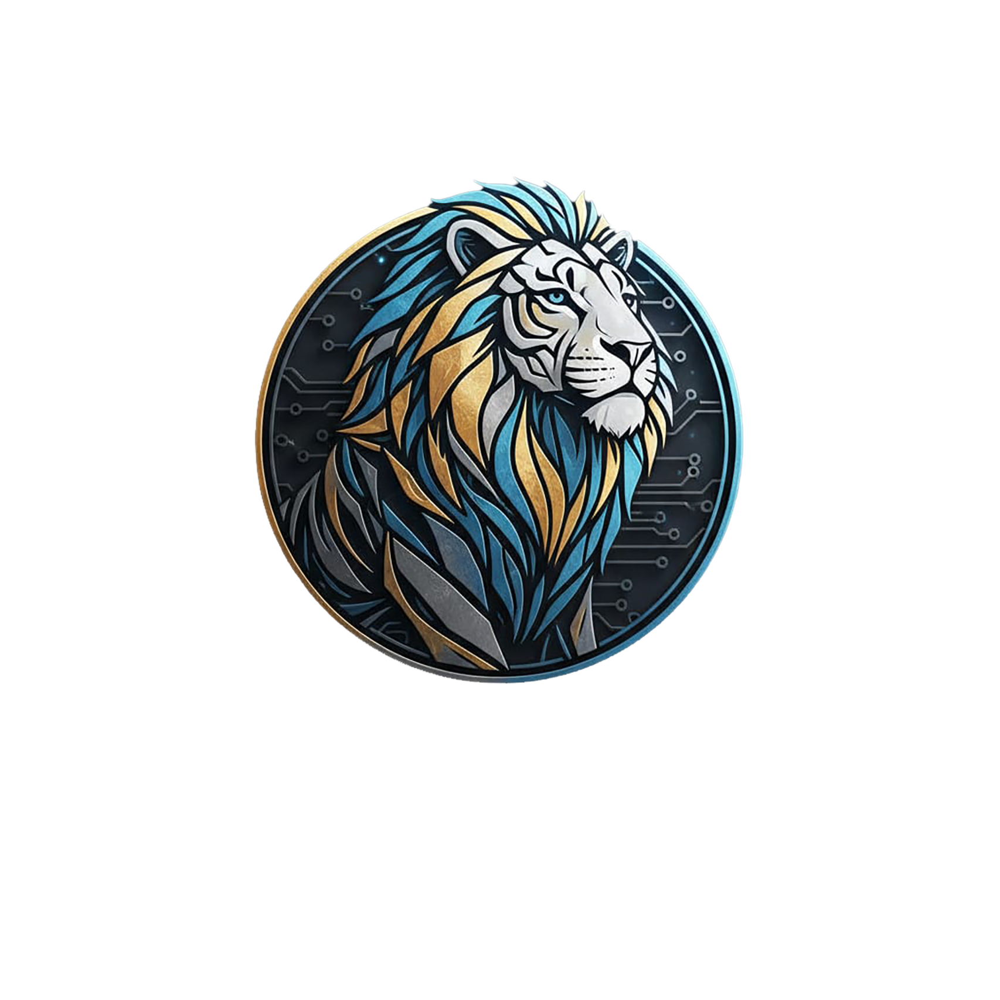

FUENTES
0
LigronPi presentes
Una Pi online puede estar esperando aunque todavía no emita. La miniatura queda reservada para una fase posterior.

Arrastra una LigronPi presente sobre una vía libre. Link reserva la vía y espera la confirmación de la Pi; una señal externa nunca se sustituye automáticamente.
Una Pi online puede estar esperando aunque todavía no emita. La miniatura queda reservada para una fase posterior.
Abre un Native para ver sus vías. Soltar una fuente sobre una vía inicia una operación confirmada, no una conexión directa desde el navegador.